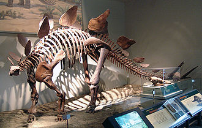

되돌아가기
- Definition
- Classification
- Biology
- 한국어 페이지
- 정의
- 일반적 특징
- 공룡의 종류
일반적 특징

공룡은 트라이아스기 후기에 출현하여 백악기 후기까지 존재하였던 지배파충류에 속하는 동물이다. 공룡과 같은 시기에 어룡, 모사사우루스, 플레시오사우루스, 익룡과 같은 다른 고생물들도 있었으나 이들은 공룡과는 다른 목으로 분류된다. 어룡(어룡목), 모사사우루스(유린목), 플레시오사우루스(사경룡목)은 수중에서 서식하였으며 익룡(익룡목)은 날아다녔다. 한편, 페름기에 살았던 디메트로돈은 단궁강 반룡목에 속하며 포유류와 연관이 깊은 생물이다. 공룡은 중생대에 크게 번성하였으며 특히 쥐라기와 백악기에 융성하였다. 다른 동물들의 경우 공룡의 크기에 비할 수 없었는데, 설치류가 주를 이루었던 당시의 포유류의 경우 지금의 고양이만한 크기가 일반적이었다. 그러나 삼돌기치목에 속하는 레페노마무스와 같은 예외적인 동물도 있었다. 이 포유류는 몸무게가 12 - 14 kg에 달해 어린 프시타코사우루스와 같은 작은 공룡을 사냥할 정도였다.
매우 다양한 종류의 공룡이 존재하였으며 2006년까지 밝혀진 바로는 500여 속에 이른다. 이 중에 골격 화석이 발견된 것은 약 75% 정도이다. 초기 연구에서는 공룡을 3400여 속으로 추정하였기도 하였으나 오늘날 화석 기록과는 차이가 있다.
2008년 10월 17일까지 확인된 공룡의 종은 1047개이다. 새를 포함하면 그 다양성은 증가한다.
공룡의 생김새, 크기, 식성, 행동 양식 등은 천차만별이었다. 초식을 하는 공룡과 육식 공룡이 모두 있었으며, 2족 보행을 하거나 4족 보행을 하였다. 플라테오사우루스나 이구아노돈 같은 공룡들은 2족 보행과 4족 보행을 모두 할 수 있었다.
거대한 크기의 공룡이 있었는가 하면 일반적으로 알려진 것과는 달리 많은 종류의 공룡이 인간과 유사한 크기이거나 그보다 작았다. 여러 종류의 공룡들이 자신의 몸을 보호하기 위한 주로 뿔, 등딱지, 골갑, 볏 등을 갖고 있었다. 공룡은 지구 어디에서나 서식하였으며 남극에도 있었다.